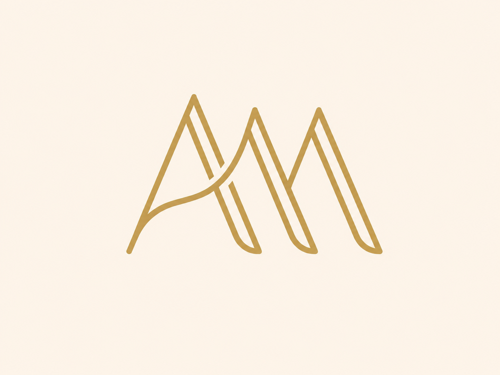
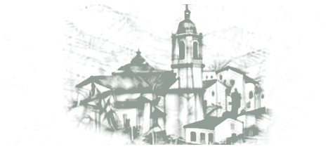

Ana Belén & Manuel
Programa musical
Celebración litúrgica
Cada pieza acompaña un momento concreto de la ceremonia. Puedes volver a escucharla aquí, en el mismo orden en el que sonará ese día.

Música de la ceremonia
· h

Un recorrido musical por los momentos de la liturgia
Ana Belén & Manuel
Celebración litúrgica
Cada pieza acompaña un momento concreto de la ceremonia. Puedes volver a escucharla aquí, en el mismo orden en el que sonará ese día.